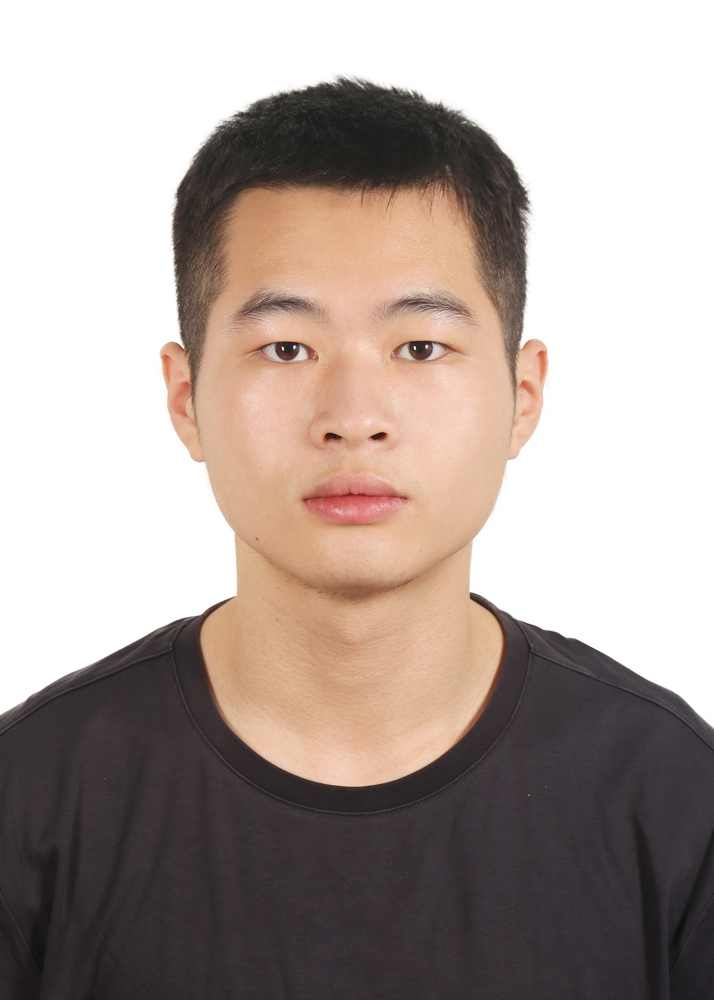

Xuanhui Lin
Undergraduate @ Lanzhou University
I am an undergraduate student at Lanzhou University, majoring in Computer Science with a focus on Data Science (2023 – 2027). My research lies at the intersection of Evolutionary Computation and Machine Learning Robustness, focusing on EC-guided adversarial robustness, adversarial attacks on deep learning models, and video reasoning.
Research Interests
News
- 2026.07 Several manuscripts under submission. Stay tuned!
- 2025.06 Paper "Vision side prompt learning with low-rank multimodal alignment for video paragraph captioning" accepted by Expert Systems with Applications.
- 2025.05 Paper "Reinforcing Video Reasoning with Focused Thinking" preprint on arXiv.
- 2023.09 Joined Lanzhou University as an undergraduate student in Computer Science (Data Science).
Publications
- Vision side prompt learning with low-rank multimodal alignment for video paragraph captioning, Yufeng Hou, Xuanhui Lin, Lan Guo, Fengxian Chen, Hui Lv, Qingguo Zhou, Yan Li. Expert Systems with Applications, 2025.
- Reinforcing Video Reasoning with Focused Thinking, Jisheng Dang, Jingze Wu, Teng Wang, Xuanhui Lin, Nannan Zhu, Hongbo Chen, Wei-Shi Zheng, Meng Wang. arXiv preprint, 2025.
- Several manuscripts under submission. Stay tuned!
Education
2023.09 — 2027.06
B.S. in Computer Science (Data Science), School of Information Science and Engineering